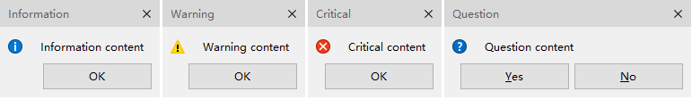

QCtmMessageBox Class
自定义外观的消息框，用法参考 QMessageBox. More...
| Header: | #include <QCtmMessageBox.h> |
| Inherits: | QCtmDialog |
Public Types
| enum | ButtonRole { InvalidRole, AcceptRole, RejectRole, DestructiveRole, ActionRole, …, ResetRole } |
| enum | Icon { NoIcon, Question, Information, Warning, Critical } |
| enum | StandardButton { Ok, Open, Save, Cancel, Close, …, NoButton } |
| flags | StandardButtons |
Properties
|
|
Public Functions
| QCtmMessageBox(QCtmMessageBox::Icon icon, const QString &title, const QString &text, QCtmMessageBox::StandardButtons buttons = NoButton, QWidget *parent = Q_NULLPTR, Qt::WindowFlags f = Qt::Dialog | Qt::MSWindowsFixedSizeDialogHint) | |
| QCtmMessageBox(QWidget *parent = Q_NULLPTR) | |
| virtual | ~QCtmMessageBox() |
| void | addButton(QAbstractButton *button, QCtmMessageBox::ButtonRole role) |
| QPushButton * | addButton(const QString &text, QCtmMessageBox::ButtonRole role) |
| QPushButton * | addButton(QCtmMessageBox::StandardButton button) |
| QAbstractButton * | clickedButton() const |
| QCtmMessageBox::StandardButton | defaultButton() |
| QCtmMessageBox::Icon | icon() const |
| QPixmap | iconPixmap() const |
| void | removeButton(QAbstractButton *button) |
| void | setDefaultButton(QCtmMessageBox::StandardButton button) |
| void | setIcon(QCtmMessageBox::Icon icon) |
| void | setIconPixmap(const QPixmap &pixmap) |
| void | setStandardButtons(QCtmMessageBox::StandardButtons buttons) |
| void | setText(const QString &text) |
| void | setTextFormat(Qt::TextFormat format) |
| void | setTextInteractionFlags(Qt::TextInteractionFlags flags) |
| QCtmMessageBox::StandardButton | standardButton(QAbstractButton *button) const |
| QCtmMessageBox::StandardButtons | standardButtons() const |
| QString | text() const |
| Qt::TextFormat | textFormat() const |
| Qt::TextInteractionFlags | textInteractionFlags() const |
Static Public Members
| QCtmMessageBox::StandardButton | critical(QWidget *parent, const QString &title, const QString &text, QCtmMessageBox::StandardButtons buttons = Ok, QCtmMessageBox::StandardButton defaultButton = NoButton) |
| QCtmMessageBox::StandardButton | information(QWidget *parent, const QString &title, const QString &text, QCtmMessageBox::StandardButtons buttons = Ok, QCtmMessageBox::StandardButton defaultButton = NoButton) |
| QCtmMessageBox::StandardButton | question(QWidget *parent, const QString &title, const QString &text, QCtmMessageBox::StandardButtons buttons = StandardButtons(Yes | No), QCtmMessageBox::StandardButton defaultButton = NoButton) |
| QCtmMessageBox::StandardButton | warning(QWidget *parent, const QString &title, const QString &text, QCtmMessageBox::StandardButtons buttons = Ok, QCtmMessageBox::StandardButton defaultButton = NoButton) |
Reimplemented Protected Functions
| virtual void | showEvent(QShowEvent *event) override |
Detailed Description
截图:

See also QMessageBox.
Member Type Documentation
enum QCtmMessageBox::ButtonRole
按钮角色.
| Constant | Value | Description |
|---|---|---|
QCtmMessageBox::InvalidRole | -1 | 无效按钮. |
QCtmMessageBox::AcceptRole | 0 | 点击按钮将使窗口以 Accepted 关闭，例如：“确定” 按钮. |
QCtmMessageBox::RejectRole | 1 | 点击按钮将使窗口以 Rejected 关闭，例如：“取消” 按钮. |
QCtmMessageBox::DestructiveRole | 2 | 点击按钮将取消更改并关闭弹窗，例如：“放弃更改” 按钮. |
QCtmMessageBox::ActionRole | 3 | 点击该按钮将导致对话框中的元素发生更改. |
QCtmMessageBox::HelpRole | 4 | 点击按钮请求帮助. |
QCtmMessageBox::YesRole | 5 | 类似于 “是” 按钮. |
QCtmMessageBox::NoRole | 6 | 类似于 “否” 按钮. |
QCtmMessageBox::ApplyRole | 8 | 类似于 “应用” 按钮. |
QCtmMessageBox::ResetRole | 7 | 类似于 “恢复默认” 按钮. |
See also StandardButton.
enum QCtmMessageBox::Icon
显示图标.
| Constant | Value | Description |
|---|---|---|
QCtmMessageBox::NoIcon | 0 | 无图标. |
QCtmMessageBox::Question | 4 | 询问图标. |
QCtmMessageBox::Information | 1 | 信息图标. |
QCtmMessageBox::Warning | 2 | 警告图标. |
QCtmMessageBox::Critical | 3 | 错误图标. |
enum QCtmMessageBox::StandardButton
flags QCtmMessageBox::StandardButtons
这些枚举描述了标准按钮的标志。每个按钮有一个对应的 ButtonRole.
| Constant | Value | Description |
|---|---|---|
QCtmMessageBox::Ok | 0x00000400 | “确定” 按钮，对应 AcceptRole. |
QCtmMessageBox::Open | 0x00002000 | “打开” 按钮，对应 AcceptRole. |
QCtmMessageBox::Save | 0x00000800 | “保存” 按钮，对应 AcceptRole. |
QCtmMessageBox::Cancel | 0x00400000 | “取消” 按钮，对应 RejectRole. |
QCtmMessageBox::Close | 0x00200000 | “关闭” 按钮，对应 RejectRole. |
QCtmMessageBox::Discard | 0x00800000 | “放弃更改” 按钮，对应 DestructiveRole. |
QCtmMessageBox::Apply | 0x02000000 | “应用” 按钮，对应 ApplyRole. |
QCtmMessageBox::Reset | 0x04000000 | “重置” 按钮，对应 ResetRole. |
QCtmMessageBox::RestoreDefaults | 0x08000000 | “恢复默认” 按钮，对应 ResetRole. |
QCtmMessageBox::Help | 0x01000000 | “帮助” 按钮，对应 HelpRole. |
QCtmMessageBox::SaveAll | 0x00001000 | “全部保存” 按钮，对应 AcceptRole. |
QCtmMessageBox::Yes | 0x00004000 | “是” 按钮，对应 YesRole. |
QCtmMessageBox::YesToAll | 0x00008000 | “全部是” 按钮，对应 YesRole. |
QCtmMessageBox::No | 0x00010000 | “否” 按钮，对应 NoRole. |
QCtmMessageBox::NoToAll | 0x00020000 | “全部否” 按钮，对应 NoRole. |
QCtmMessageBox::Abort | 0x00040000 | “中止” 按钮，对应 RejectRole. |
QCtmMessageBox::Retry | 0x00080000 | “重试” 按钮，对应 AcceptRole. |
QCtmMessageBox::Ignore | 0x00100000 | “忽略” 按钮，对应 AcceptRole. |
QCtmMessageBox::NoButton | 0x00000000 | 无效按钮. |
The StandardButtons type is a typedef for QFlags<StandardButton>. It stores an OR combination of StandardButton values.
See also ButtonRole and standardButtons.
Property Documentation
icon : Icon
消息弹窗的图标.
这些图标可以是下面的任意一个:
- QCtmMessageBox::NoIcon
- QCtmMessageBox::Question
- QCtmMessageBox::Information
- QCtmMessageBox::Warning
- QCtmMessageBox::Critical
Access functions:
See also iconPixmap.
iconPixmap : QPixmap
当前显示图标.
Access functions:
| QPixmap | iconPixmap() const |
| void | setIconPixmap(const QPixmap &pixmap) |
See also icon.
standardButtons : StandardButtons
消息弹窗的按钮集合.
Access functions:
| QCtmMessageBox::StandardButtons | standardButtons() const |
| void | setStandardButtons(QCtmMessageBox::StandardButtons buttons) |
See also addButton.
text : QString
消息弹窗的显示文本.
Access functions:
textFormat : Qt::TextFormat
消息框显示的文本格式.
Access functions:
| Qt::TextFormat | textFormat() const |
| void | setTextFormat(Qt::TextFormat format) |
See also setText().
textInteractionFlags : Qt::TextInteractionFlags
指定消息框的标签应如何与用户交互输入。
Access functions:
| Qt::TextInteractionFlags | textInteractionFlags() const |
| void | setTextInteractionFlags(Qt::TextInteractionFlags flags) |
Member Function Documentation
QCtmMessageBox::QCtmMessageBox(QCtmMessageBox::Icon icon, const QString &title, const QString &text, QCtmMessageBox::StandardButtons buttons = NoButton, QWidget *parent = Q_NULLPTR, Qt::WindowFlags f = Qt::Dialog | Qt::MSWindowsFixedSizeDialogHint)
构造函数，并指定显示图标 icon, 标题文本 title, 显示文本 text, 按钮集合 buttons, 父窗口 parent, 窗口风格 f.
QCtmMessageBox::QCtmMessageBox(QWidget *parent = Q_NULLPTR)
构造函数 parent.
[virtual] QCtmMessageBox::~QCtmMessageBox()
析构函数.
void QCtmMessageBox::addButton(QAbstractButton *button, QCtmMessageBox::ButtonRole role)
添加按钮 button 并指定其角色 role.
See also removeButton.
QPushButton *QCtmMessageBox::addButton(const QString &text, QCtmMessageBox::ButtonRole role)
创建文本为 text 的按钮并指定其角色 role.
This function overloads addButton.
See also removeButton.
QPushButton *QCtmMessageBox::addButton(QCtmMessageBox::StandardButton button)
添加标准按钮 button.
This function overloads addButton.
See also removeButton.
QAbstractButton *QCtmMessageBox::clickedButton() const
返回点击的按钮.
[static] QCtmMessageBox::StandardButton QCtmMessageBox::critical(QWidget *parent, const QString &title, const QString &text, QCtmMessageBox::StandardButtons buttons = Ok, QCtmMessageBox::StandardButton defaultButton = NoButton)
构造一个错误消息弹窗，并指定标题文本 title, 显示文本 text, 按钮集合 buttons, 默认按钮 defaultButton, 父窗口 parent.
See also QMessageBox::critical.
QCtmMessageBox::StandardButton QCtmMessageBox::defaultButton()
返回默认按钮.
See also setDefaultButton.
QCtmMessageBox::Icon QCtmMessageBox::icon() const
返回显示图标.
Note: Getter function for property icon.
See also setIcon.
QPixmap QCtmMessageBox::iconPixmap() const
返回图标.
Note: Getter function for property iconPixmap.
See also setIconPixmap.
[static] QCtmMessageBox::StandardButton QCtmMessageBox::information(QWidget *parent, const QString &title, const QString &text, QCtmMessageBox::StandardButtons buttons = Ok, QCtmMessageBox::StandardButton defaultButton = NoButton)
构造一个信息消息弹窗，并指定标题文本 title, 显示文本 text, 按钮集合 buttons, 默认按钮 defaultButton, 父窗口 parent.
See also QMessageBox::information.
[static] QCtmMessageBox::StandardButton QCtmMessageBox::question(QWidget *parent, const QString &title, const QString &text, QCtmMessageBox::StandardButtons buttons = StandardButtons(Yes | No), QCtmMessageBox::StandardButton defaultButton = NoButton)
构造一个询问消息弹窗，并指定标题文本 title, 显示文本 text, 按钮集合 buttons, 默认按钮 defaultButton, 父窗口 parent.
See also QMessageBox::question.
void QCtmMessageBox::removeButton(QAbstractButton *button)
移除按钮 button.
See also addButton.
void QCtmMessageBox::setDefaultButton(QCtmMessageBox::StandardButton button)
设置默认按钮 button.
See also defaultButton.
void QCtmMessageBox::setIcon(QCtmMessageBox::Icon icon)
设置显示图标 icon.
Note: Setter function for property icon.
See also icon().
void QCtmMessageBox::setIconPixmap(const QPixmap &pixmap)
设置自定义的图标 pixmap, 并且 icon 将被设置为 Icon::NoIcon.
Note: Setter function for property iconPixmap.
See also iconPixmap.
void QCtmMessageBox::setStandardButtons(QCtmMessageBox::StandardButtons buttons)
设置按钮集合 buttons.
Note: Setter function for property standardButtons.
See also standardButtons().
void QCtmMessageBox::setText(const QString &text)
设置显示文本 text.
Note: Setter function for property text.
See also text().
void QCtmMessageBox::setTextFormat(Qt::TextFormat format)
设置文本格式 format.
Note: Setter function for property textFormat.
See also textFormat().
void QCtmMessageBox::setTextInteractionFlags(Qt::TextInteractionFlags flags)
设置文本交互方式 flags.
Note: Setter function for property textInteractionFlags.
See also textInteractionFlags().
[override virtual protected] void QCtmMessageBox::showEvent(QShowEvent *event)
Reimplements: QDialog::showEvent(QShowEvent *event).
QCtmMessageBox::StandardButton QCtmMessageBox::standardButton(QAbstractButton *button) const
返回按钮对应的标准按钮 button.
QCtmMessageBox::StandardButtons QCtmMessageBox::standardButtons() const
返回按钮集合.
Note: Getter function for property standardButtons.
See also setStandardButtons.
QString QCtmMessageBox::text() const
返回显示文本.
Note: Getter function for property text.
See also setText.
Qt::TextFormat QCtmMessageBox::textFormat() const
返回文本格式.
Note: Getter function for property textFormat.
See also setTextFormat.
Qt::TextInteractionFlags QCtmMessageBox::textInteractionFlags() const
返回文本交互方式.
Note: Getter function for property textInteractionFlags.
See also setTextInteractionFlags.
[static] QCtmMessageBox::StandardButton QCtmMessageBox::warning(QWidget *parent, const QString &title, const QString &text, QCtmMessageBox::StandardButtons buttons = Ok, QCtmMessageBox::StandardButton defaultButton = NoButton)
构造一个警告消息弹窗，并指定标题文本 title, 显示文本 text, 按钮集合 buttons, 默认按钮 defaultButton, 父窗口 parent.
See also QMessageBox::warning.